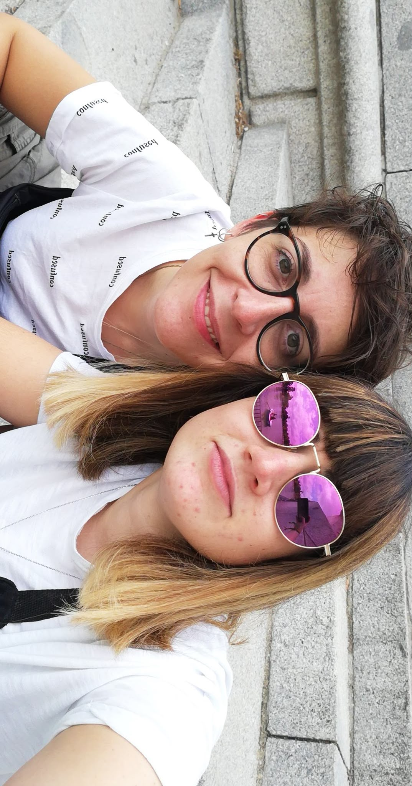

UN RECUERDO DE NOSOTRAS
Nuestra historia ♡

Todo empezó el día de tu cumpleaños. Lo que parecía una fecha especial para ti terminó convirtiéndose también en el comienzo de la historia más bonita de mi vida. Desde aquel día hemos compartido risas, planes, discusiones, abrazos, momentos difíciles y muchísimos recuerdos que no cambiaría por nada.
Han pasado 7 años desde que nuestras vidas se cruzaron, y todavía me parece increíble pensar que aquel día comenzó todo lo que hoy somos.
Gracias por aparecer en mi vida y por convertir una fecha tan especial en nuestro propio aniversario. ❤️
Te quiero muchísimo. ❤️